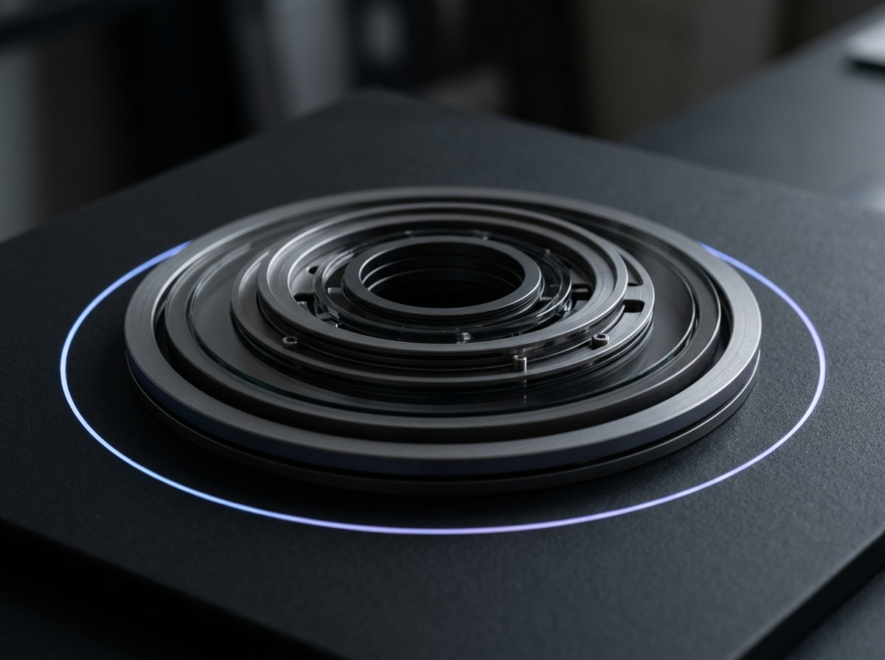
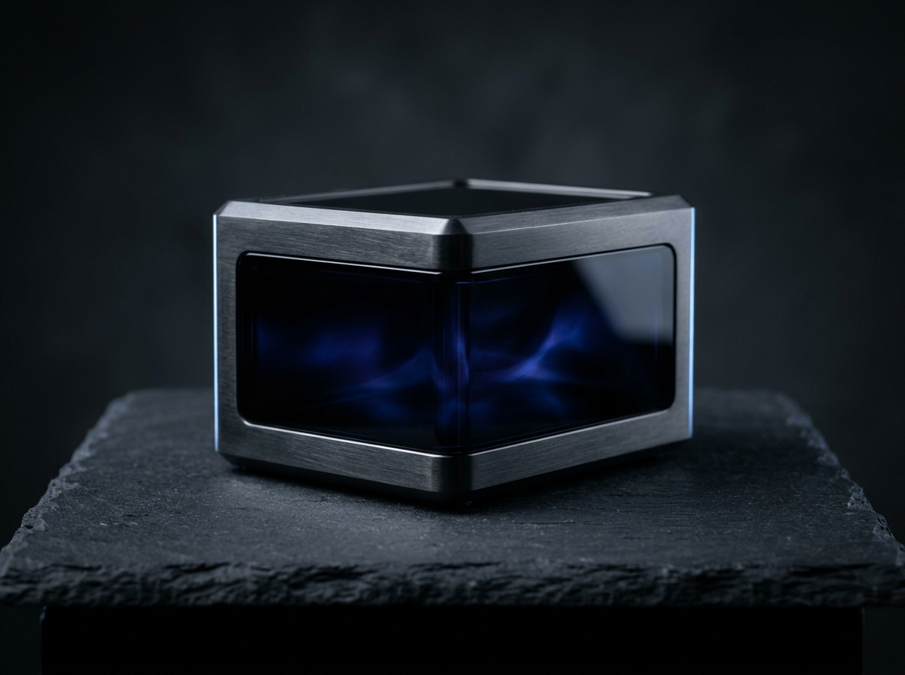
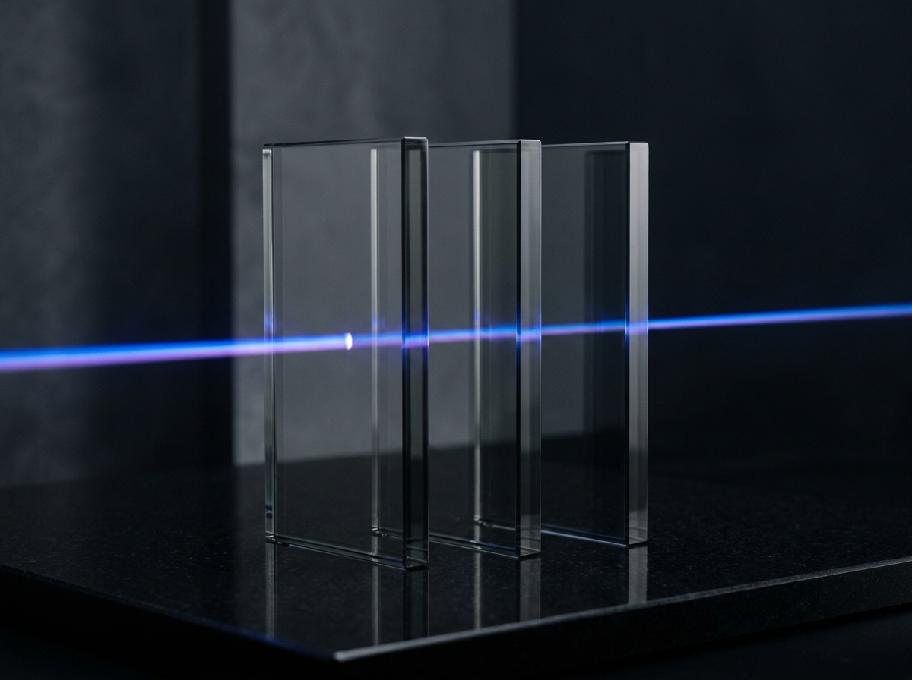

See where your space went.
Understand what fills your Mac — including the “System Data” macOS won’t explain — catch what grew between scans, and tidy folders or archive drives without losing control.
Free download · Optional donations · Apple silicon Macs running macOS 26 or later
Storage, explained.
The chart adds up file and folder sizes. APFS can share the same disk space between files.
Plus 11.76 GB purgeable (estimate): macOS frees this on its own, and Storage settings counts it as available.
Measured from watched-folder checks without requiring a full startup-disk rescan.
Click sidebar views or expand Cleanup suggestions directly on the MacBook screen — see how Andromeda maps your entire startup disk, including macOS-restricted areas.
Measure. Organise. Archive.
Every tool is built for native macOS accuracy. Select any capability to read the full guide.
Precise APFS space calculation
Separates reported allocation from private blocks actually freed, handling APFS clones and shared space honestly.
Expose “System Data”
Breaks down macOS’s hidden System Data using a 41-item catalog of caches, simulators, backups, and AI models.
What changed? & Storage Trends
Compare any two scans, chart free space over months, and catch silent folder growth automatically.
Exact Duplicates & Similar Images
Byte-for-byte duplicate review across local and external drives, plus perceptual lookalikes and Apple Photos.
App Cleanup & Installer Finder
Uninstall apps alongside scattered Library files, filter Intel-only or unused apps, and sweep old DMGs.
Organize messy folders
Sort folders by kind, EXIF date, or project with full preview and group-by-group undo — zero deletions.
Automated rules & on-device OCR
File documents automatically with nested All / Any / None rules and local text matching inside PDFs and images.
Offline Drive Catalogs
Search unplugged external drives with previews, 4K+ codec filters, shelf notes, and cross-drive collections.
Verified External Archives
Offload projects to APFS disks with SHA-256 checksums, clone-backed versions, and 30-day integrity checks.
Space Plan & Cloud Offload
Combine cleanups, archives, and Move to Cloud receipts into one recovery goal while keeping essentials local.
Built for safety
Every file change is journaled before it happens. Ordinary cleanups move items to Trash, Organize runs undo a single group or the entire batch from History, and mid-run crash recovery restores every path and inode identically.
Tested by force-quitting runs mid-flight across over 1,300 filesScanning, organizing, cataloging, and on-device OCR content matching run locally on your Mac. No accounts, no usage analytics, and no filenames or folder structures ever leave your machine.
Zero telemetry · works completely offlineNothing moves, deletes, or changes silently. Every cleanup review, automation rule, archive copy, and system action shows the exact paths and coverage beforehand — and automatically leaves code projects, system libraries, and iCloud-synced folders untouched.
Full review before apply · unreadable paths disclosed rather than guessed


FAQ
~/Library, and iCloud-synced Desktop or Documents untouched. Every move is previewed first and can be undone per group or for the entire run.
Ready to see what’s really using your Mac?
Free download · Optional donations · Apple silicon · macOS 26 or later